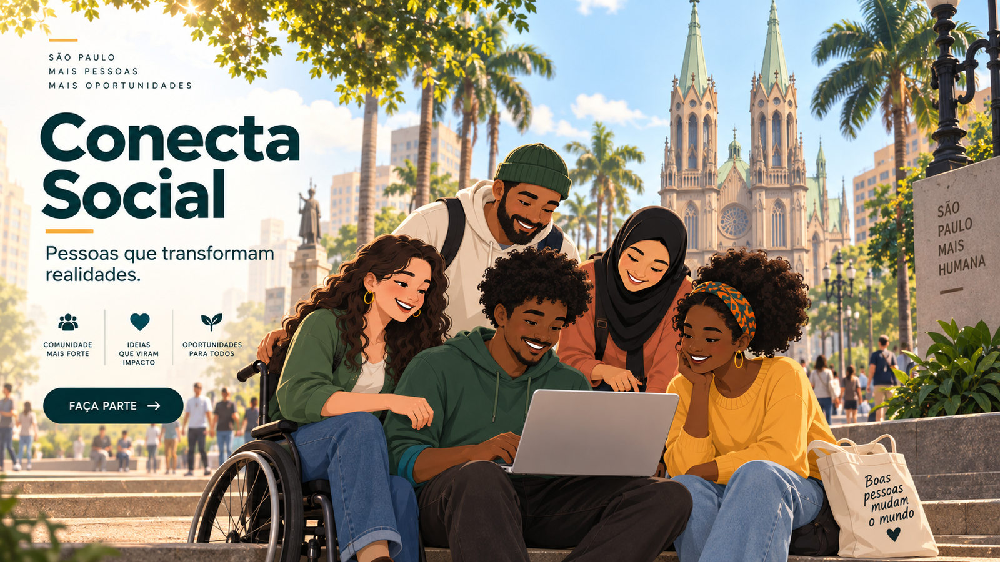

Nossa missão
Conectar pessoas, divulgar iniciativas solidárias e ampliar o acesso a oportunidades de participação social na cidade de São Paulo.
Projeto acadêmico • São Paulo – SP
Uma iniciativa fictícia que aproxima a comunidade de oportunidades de doação e voluntariado, com respeito à diversidade e à inclusão.

O Conecta Social é uma ONG fictícia desenvolvida para demonstrar como uma plataforma web pode apresentar ações comunitárias e orientar pessoas interessadas em contribuir.
Conectar pessoas, divulgar iniciativas solidárias e ampliar o acesso a oportunidades de participação social na cidade de São Paulo.
Você pode conhecer as campanhas de doação, descobrir atividades de voluntariado e acessar o formulário demonstrativo de cadastro.
Quero participar